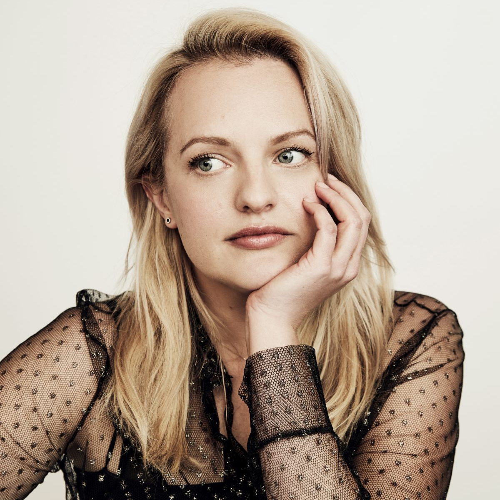
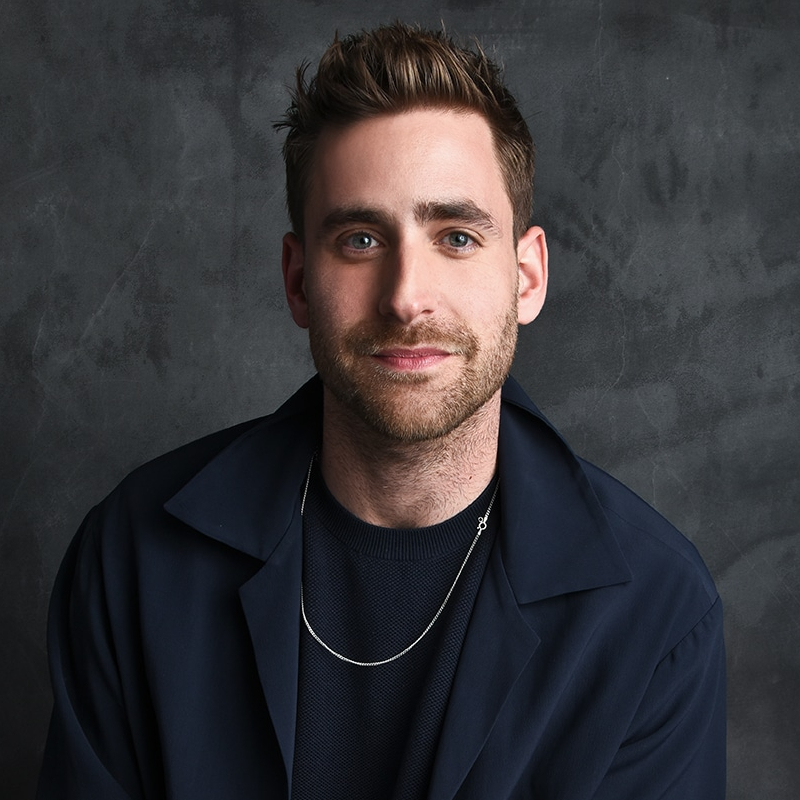

THE INVISIBLE MAN
ELISABETH MOSS
Elisabeth Moss is an American actress born on July 24th 1982 in Los Angeles, California, USA. She is best known for her roles as Peggy Olson in the AMC series Mad Men (aired between 2007-2015), her role as Offred in the Hulu series The Handmaid's Tale (2017) and the films The One I Love (2014) and The Invisible Man (2020). Initially, Moss had aspirations of becoming a professional dancer. In her adolescence, she travelled to New York City to study ballet at the School of American Ballet. Moss continued to study dance throughout her teenage years but began obtaining acting roles as well.
Her first screen role was in 1990 when she appeared in the NBC miniseries Lucky Chances as young Lucky. Moss also starred in Girl, Interrupted (1999), Listen Up Philip (2014), High-Rise (2015), Queen of Earth (2015) and The Square (2017). She has won two Golden Globes, for BBC miniseries Top of the Lake and the Hulu series The Handmaid's Tale.
Information about Elisabeth Moss are taken from her IMDB page.
Your browser does not support the audio element. Please click here to download an mp3 of the audio.
OLIVER JACKSON
Oliver Mansour Jackson-Cohen was born on October 24th 1986 in Westminster, London. And is an English film actor and model. He is best known for his role as Adrian Griffin in the 2020 remake of The Invisible Man and for his roles as Luke Crain and Peter Quint in the Netflix television programmes The Haunting of Hill House (2018), as well as its second series, The Haunting of Bly Manor (2020). He also had a recurring role in the 2013 television series Dracula.
Oliver attended the Lee Strasberg Theatre and Film Institute in New York City. He landed a small role in the television series Hollyoaks when he was 15, and he later appeared in the ITV series The Time of Your Life in 2007. In 2008, he played Phillip White in the BBC adaptation of Lark Rise to Candleford and in 2010, he played Damon in the romantic comedy film Going the Distance and as a hitman in the action film Faster, opposite Dwayne Johnson. In 2011, he starred as Prince William, Duke of Cambridge in a series of Funny or Die videos with Allison Williams as newlywed Kate Middleton. In 2013, Jackson-Cohen was cast as journalist Jonathan Harker in the NBC series Dracula.
Information about Oliver Jackson are taken from his Wikipedia page.
Your browser does not support the audio element. Please click here to download an mp3 of the audio.
To find out about the movie, press here to go to the navigation bar on top and press on home.